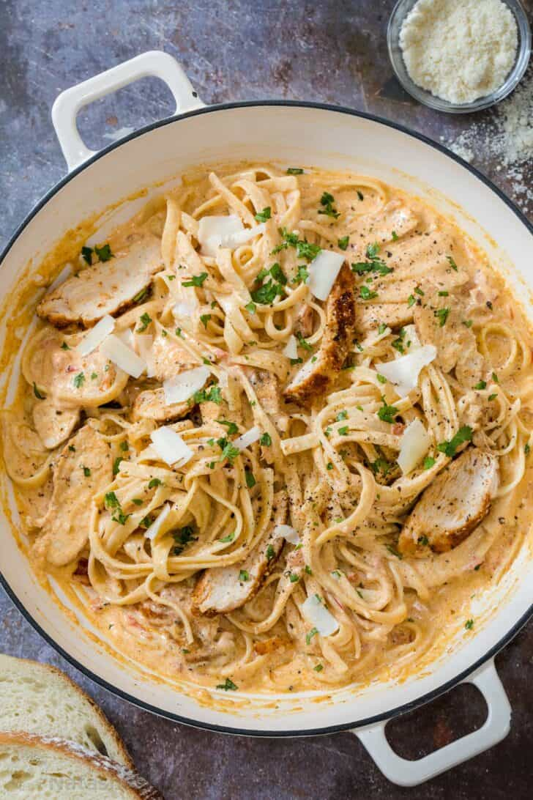

Cajun Chicken Pasta

Oh boy here we go. Everybody loves pasta and if you don't, grow up.
Cajun chicken pasta has got to be one of the best pasta dishes you can make;
everyone loves it. It's so easy to make that you'll be wanting to make this
everyday on blud.
Ingredients
- Pasta (choose your favorite shape)
- Chicken Breast
- Cajun Seasoning
- Salt and Pepper
- Freshly minced Garlic
- Butter
- Heavy Whipping Cream
- Parmesan
Let's Cook
- Boil a pot of salted water to cook pasta
- Use a meat mallet or something similar to even the thickness of the chicken
- Season chicken with cajun seasoning
- Saute chicken with oil until fully cooked. Slice into strips
- In a seperate skillet, saute garlic in butter until fragrent
- Add cream, cajun seasoning, and cheese and bring everything to a simmer
- Combine everything together